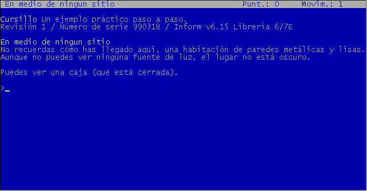

Esto es mucho trabajo, pero por suerte la librería InformatE! realiza gran parte del mismo. Vamos a empezar directamente con un ejemplo. Nuestro mundo inicial constará de un solo lugar en el cual hay tan solo tres objetos: una caja cerrada (que tiene dentro un papel) y un boligrafo (inicialmente en posesión del jugador).
La primera versión del juego se va a limitar a crear estos objetos y ponerlos en el lugar adecuado (es decir, el papel dentro de la caja, el bolígrafo "dentro" del jugador, y todo ello dentro de la habitación).
Copia lo siguiente en el editor:
!-------------------------------------------------
Constant Historia "Cursillo";
Constant Titular " Un ejemplo práctico paso a paso.^";
Include "EParser";
Include "Acciones";
Include "Facilitar";
!-------EMPIEZA EL MUNDO
!****** Los lugares
Habitacion Celda "En medio de ningun sitio"
with descripcion "No recuerdas cómo has llegado aqui, una habitación
de paredes metálicas y lisas. Aunque no puedes ver ninguna fuente de
luz, el lugar no está oscuro.";
!****** Los objetos
Objeto Caja "caja" Celda ! Celda es dónde está la caja
with nombre 'caja',
has femenino recipiente abrible ~abierta;
Objeto Papel "papel" Caja ! Caja es dónde está el papel
with nombre 'papel';
Objeto Boli "boligrafo" ! El boli no está en ningún sitio
with nombre 'boligrafo' 'boli';
!---- Ya estan todos los objetos descritos. Ahora empieza el juego
[ Inicializar;
localizacion=Celda;
move Boli to Jugador; ! Ponemos el boli en el jugador
! antes de empezar
"Bienvenido al...^"; ! Mensaje inicial
];
Include "Gramatica";
!-----------------------------------------------------FIN DE FICHERO
|
Eso es todo de momento. ¡Vamos escríbelo! Si no lo haces no podrás
seguir el cursillo, y no me vengas luego con que esto es muy
difícil. ¿Ya lo has copiado todo en un fichero? Bien, pues guarda el
fichero en disco, en el directorio C:\inform donde está todo lo
demás, con el nombre curs1.inf Ahora, si estás en Windows, abre
una sesión DOS y escribe:
C:\> CD \INFORM C:\INFORM> INFORM CURS1.INF |
Este comando arrancará el compilador de Inform, el cual leerá de tu fichero el mundo que has creado, y tras unos instantes generará un nuevo fichero llamado CURS1.Z5 que contiene una versión "jugable" de ese mundo. (Si en este proceso aparecen errores, comprueba que lo que has escrito es idéntico a lo que aparece en este cursillo, en particular verifica que no hayas olvidado signos de puntuación o que no hayas cambiado una comilla simple por una doble. Si pese a todo tienes problemas, puedes enviar una copia de lo que has escrito al autor de este cursillo).
Bueno ¿qué hacemos ahora con CURS1.Z5? Evidentemente jugarlo. Para esto necesitamos el programa Frotz. Si estás usando la versión de DOS (te la recomiendo, al menos para seguir este cursillo), basta que pongas:
C:\INFORM> FROTZ CURS1.Z5 |
Esto hará aparecer una pantalla azul como la siguiente:

En ella podemos leer cosas que habíamos escrito en el fichero CURS1.INF (como por ejemplo "En medio de ningún sitio", que aparece en la barra de título, o la descripción del lugar, que empieza con "No recuerdas cómo has llegado..."
Sin embargo aparecen más cosas que no habíamos puesto en nuestras descripciones. Por ejemplo, la frase "Puedes ver una caja (que está cerrada)". En nuestro fichero no aparece esa frase, ¿quién la ha escrito?
La respuesta es "La librería". La librería es algo que se añade a tu programa para completar todo lo que tú no has programado. De hecho, en nuestro juego nos hemos limitado a poner una caja allí, pero no hemos "explicado" a inform qué ha de ocurrir si el jugador intenta abrir la caja, o si intenta saltar sobre ella. ¿Qué pasaría si el jugador intentára esas cosas? Veámoslo:
> ABRE CAJA ABRES LA CAJA DESCUBRIENDO UN PAPEL >SALTA SOBRE LA CAJA No lograrás nada así. |
¡Sorprendente! Aparecen más frases que no habíamos escrito nosotros (aunque sí que le habíamos dicho a Inform que pusiera el papel dentro de la caja). Sigamos experimentando:
> INVENTARIO Llevas: un boligrafo. > EXAMINA CAJA En la caja hay un papel. > PON BOLIGRAFO EN LA CAJA Metes el boligrafo dentro de la caja. > EXAMINA CAJA En la caja hay un boligrafo y un papel. > CIERRA CAJA Cierras la caja. > EXAMINA CAJA No puedes ver lo que hay dentro de la caja porque está cerrada. > MIRA DEBAJO DE LA CAJA No ves nada interesante. > SACUDE CAJA No la tienes. > COGELA Cogida. > SACUDELA Te sientes ridículo agitando la caja. > COGE PAPEL No veo eso que dices. > ABRE CAJA Abres la caja, descubriendo un bolígrafo y un papel. > COGE PAPEL Cogido. > COGE BOLI Cogido. > EXAMINA CAJA La caja está vacía. > METE EL PAPEL DENTRO DEL BOLIGRAFO No se pueden meter cosas dentro del boligrafo. > METE EL PAPEL DENTRO DE LA CAJA Metes el papel dentro de la caja. |
¿Has visto qué complejidad y variedad de situaciones hemos logrado sin necesidad de programar nada? La librería sabe qué hacer ante ciertas acciones del jugador. De hecho conoce una increíble variedad de verbos y tiene una respuesta adecuada para cada uno, aunque la respuesta depende del tipo de objeto sobre el que se apliquen; por ejemplo nos deja meter cosas dentro de la caja, pero no nos deja meter el papel en el bolígrafo. También nos deja abrir la caja, pero no nos dejaría abrir el bolígrafo o el papel ¿cómo sabe la librería qué respuesta es la más adecuada en cada caso?
Sencillamente porque en la definición de los objetos se lo hemos
dicho. Observa que cada objeto tiene al final una línea que empieza
por has, seguida de una serie de palabras. En el caso de la
caja estas palabras son femenino recipiente abrible
~abierta. "Femenino" es para que la librería sepa que cuando
te refieres a la caja debe responder "Cogida", en lugar de
"Cogido", por ejemplo. "Recipiente" indica que se pueden meter
cosas dentro. "Abrible" que se puede abrir y cerrar. Por último
~abierta indica que inicialmente no está abierta (es
decir, está cerrada). El signo ~ delante de "abierta" indica
la negación.
Por otra parte el papel y el bolígrafo no tienen esta línea con "has", lo cual significa que no tienen todas esas propiedades que tenía la caja. En particular no son "femeninos" (por tanto son masculinos), no so recipientes (no se puede meter cosas en ellos) y no son abribles (rechazarán el verbo ABRIR y CERRAR).
Sigue experimentando tú mismo. Intenta hacer lo que harías si fuese un juego real. Probablemente tratarías de leer el papel o de escribir en él con el bolígrafo. Además tratarías de examinar todo lo que se menciona en el juego, y por supuesto tratarías de abandonar esta habitación en dirección Norte, Sur, Este u Oeste. Aqui nos topamos con las limitaciones de este mini-juego: la habitación no puede abandonarse, los objetos no tienen "nada especial", no comprende el verbo escribir y no nos deja hacer algunas acciones obvias (como romper el papel, por ejemplo).
Esto se debe a que no hemos programado nada aún. La librería sabe manejar algunas situaciones que son válidas para el caso general, pero si en algún caso particular queremos que un objeto se comporte de forma diferente a la prevista por la librería, habrá que programarlo.
Esta es la filosofía de diseño de Inform: sólo hay que programar las excepciones a la regla general y dejar que la librería se ocupe de todo lo demás. La librería ya sabe que dentro de un recipiente se pueden meter cosas, sólo debemos programar las excepciones (es decir, que cierto objeto no pueda meterse dentro de cierto recipiente, o bien que cuando se haga ocurra algo especial). En el capítulo siguiente trataremos eso. De momento vamos a ver qué más puede hacerse sin programar nada aún.
Sin necesidad de programar nada todavía, podemos mejorar las descripciones de los objetos, de modo que ante la orden EXAMINAR no responda el insulso "No observas nada especial". Para ello basta añadir una descripción a cada objeto.
En Inform, todo lo relacionado con un objeto se escribe "dentro" de ese objeto, para que sea fácil al programador ver todo el texto relacionado con ese objeto. En cierta forma, escribir un juego es como hacer una base de datos en la que se detalla para cada objeto sus características más importantes. Ya hemos visto como en la caja aparecen una serie de palabras (femenino recipiente abrible ...) que no son sino características especiales de este objeto, llamadas atributos.
La librería permite EXAMINAR cualquier objeto del juego, pero por defecto producirá la respuesta "No observas nada especial". Excepto en el caso de la caja, para la cual, por ser un recipiente, en lugar de decir eso nos dice lo que contiene (siempre que esté abierta). Si queremos que diga otra cosa, debemos asignar una descripción al objeto. Para esto basta añadir algo como lo siguiente:
Objeto Papel "papel"
with nombre 'papel',
descripcion "El papel dice ~Tonto el que lo lea~";
|
(NOTA: El signo ~, cuando aparece dentro de una cadena de
texto, se convertirá en unas comillas cuando sea impreso). Esta
descripción aparecerá si el jugador intenta los verbos EXAMINA o LEE
con el papel. De la misma forma puedes asignar una descripción al
boligrafo o a la caja. Pero atención, si hacemos una descripción para
la caja, entonces la librería abandonará su regla por defecto según la
cual mostraba los contenidos de la caja, para mostrar en cambio
nuestra descripción. Es decir, si pones:
Objeto Caja "caja"
with nombre 'caja'
descripcion "Es una caja de cartón, de aspecto endeble",
has femenino recipiente abrible ~abierta;
|
Cuando el jugador ponga EXAMINAR CAJA ya no recibirá el mensaje "No puedes ver lo que hay dentro de la caja porque está cerrada", sino que recibirá la respuesta "Es una caja de cartón de aspecto endeble". E incluso si la caja está abierta, la librería ya no dirá "En la caja hay un papel", sino nuestra descripción. Si el jugador quisiera ver lo que hay dentro de la caja, ya no bastaría EXAMINAR CAJA, sino que debería poner MIRA DENTRO DE LA CAJA, o MIRA EN LA CAJA o BUSCA EN LA CAJA. Por supuesto esto son las reglas de la librería, las cuales no son inamovibles. Si queremos otra cosa, la programaremos como una excepción al caso general. Ha llegado el momento de pasar a mayores.